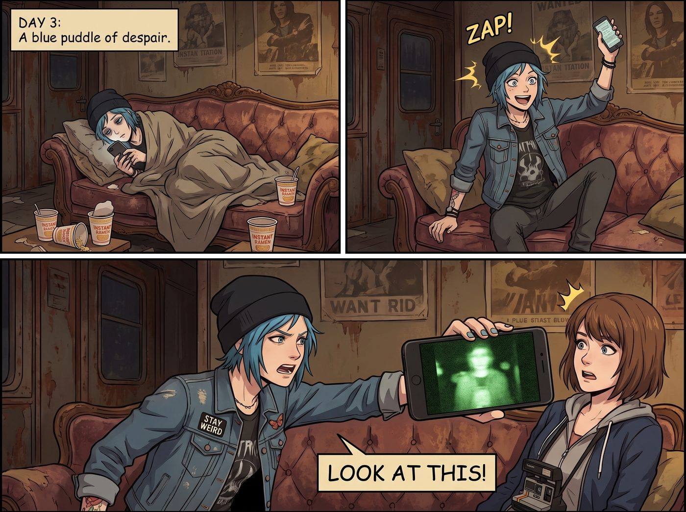
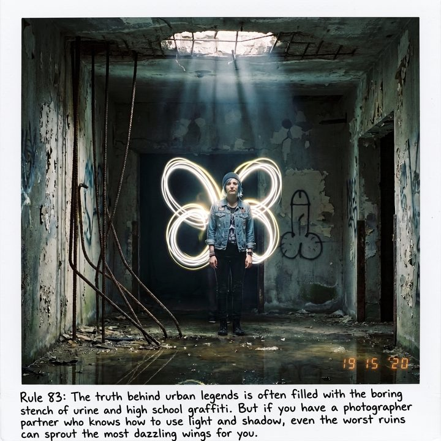
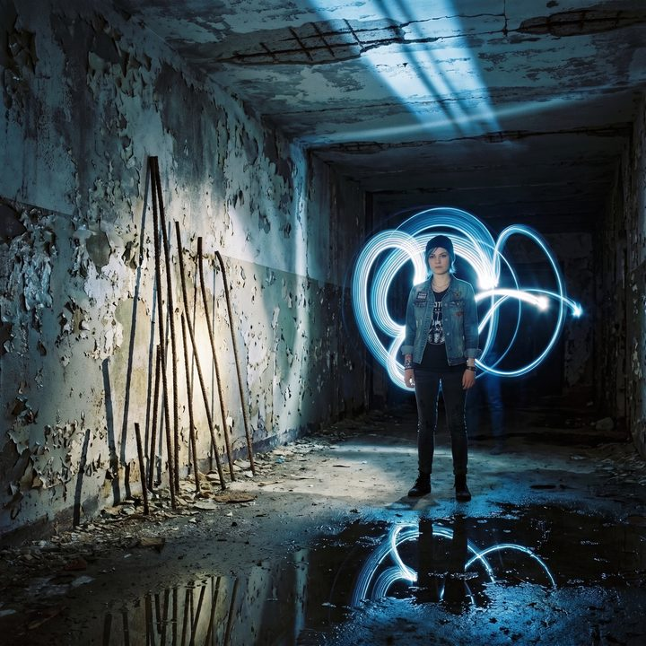
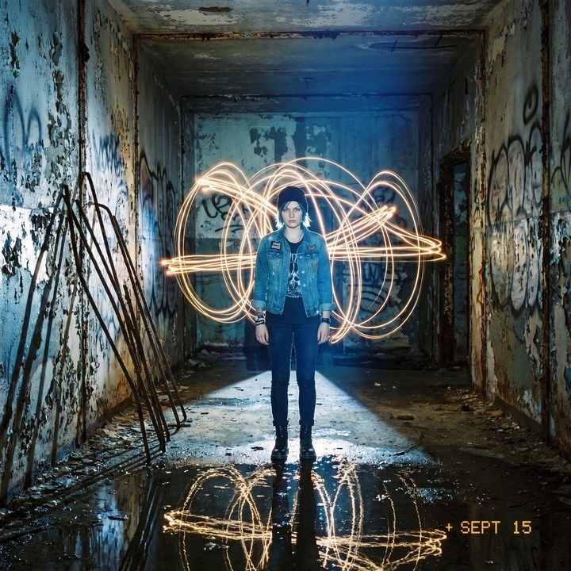

光之羽翼




自從那場慘烈的「紅岩蟹與海帶事件」後，Chloe 連續鬱悶了整整三天。
這三天裡，她像一灘失去夢想的藍色爛泥，整天癱在車廂的沙發上，拿著手機漫無目的地狂刷 4chan 的 /x/（超自然與都市傳說）板塊。
就在 Victoria 準備拿掃把將這團「散發著頹廢氣息的不可回收垃圾」掃出門外時，沙發上的 Chloe 突然像觸電一樣彈了起來。
「超級麥克斯！穿上妳的靴子，帶上妳的相機！我們今晚有活幹了！」
Chloe 興奮地將手機屏幕懟到 Max 臉上。屏幕上是一個畫質極低、綠色夜視風格的論壇貼文： 【西雅圖郊外廢棄二戰海岸地堡探險：聽到地下二層傳來奇怪的低語聲，牆上有疑似邪教的鮮血符號！不敢再深入了，奉勸各位不要去送死！】
「看到了嗎？！」Chloe 的眼睛裡重新燃起了那種危險的龐克之火，「廢棄地堡！邪教符號！政府的秘密地下實驗室！這絕對比釣那隻破螃蟹刺激一萬倍！我們今晚就去踢爆那些邪教徒的屁股！」
工作站前的 Lily 推了推圓框眼鏡，冷靜地看了一眼屏幕上的 GPS 座標。
「Chloe 學姐，根據公開的地方檔案，該地堡早在 1985 年就已經廢棄，結構多年無人維護。如果您在那裡發生意外，保險公司將以『非法侵入（Trespassing）及故意暴露於危險中』為由，拒絕支付任何醫療費用。」
「去他的保險條款！龐克是不會被合規性束縛的！」
Chloe 一把拉起還在狀況外的 Max，將兩個高光手電筒和一根撬棍塞進背包裡，風風火火地衝出了車廂門。
兩個小時後。
午夜的冷杉林深處，那座半掩埋在雜草與藤蔓中的混凝土防空地堡，在月光下確實散發著一種《沉默之丘》般的恐怖氣息。
「跟緊我，Max。如果有什麼長著觸手的東西衝出來，我會用撬棍敲碎它的腦袋。」
Chloe 嚥了一口唾沫，雙手緊握手電筒和撬棍，像個如臨大敵的突擊隊員一樣，小心翼翼地踢開了地堡生鏽的鐵門。
一股濃烈的發霉味撲面而來。
兩人打開高光手電筒，兩道刺眼的光束刺破了幾十年沒有見過光明的黑暗。
「準備好見證深淵了嗎……」
Chloe 緊張地深吸一口氣，將手電筒的光束打向論壇裡提到的「邪教祭壇」和「鮮血符號」的那堵牆。
光束定格。
空氣中死一般的寂靜。
牆上確實有紅色的顏料，但那根本不是什麼鮮血畫成的五芒星。
那是一個用劣質紅色噴漆畫出來的、巨大且比例極度失調的男性生殖器。旁邊還歪歪扭扭地寫著一行字：「BRAD WAS HERE 2019. FUCK MATH.（布萊德到此一遊。去他媽的數學。）」
至於論壇裡提到的「邪教祭壇」？
那只是一張發霉的破床墊，周圍散落著十幾個喝空的「White Claw（白爪）」酒精氣泡水易開罐，以及幾個用過的保險套包裝紙。
「低語聲」也找到了源頭——地堡深處的水管破裂，水滴砸在空鋁罐上，加上空曠地形的回音，產生了某種沉悶的共振。
「就這？！」
Chloe 的肩膀瞬間垮了下來，手裡的撬棍無力地垂在地上。
「沒有邪教？沒有突變怪物？沒有政府的秘密生化武器？只有一個叫 Brad 的蠢貨高中生，在這裡逃避他的數學考試，還喝著那種一點男子氣概都沒有的氣泡水？！」
Chloe 崩潰地踢飛了一個空罐子，絕望地仰起頭：「這個世界已經墮落了！連都市傳說都被這群無聊的青少年給中產階級化了！這比在海風裡吹三個小時釣上一團海帶還要無聊！」
就在 Chloe 喋喋不休地抱怨著「恐怖文化的衰退」時，她突然發現，身後的 Max 一直沒有說話。
Chloe 轉過頭：「Max？我們走吧，這裡除了一股尿騷味和高中生的荷爾蒙味，什麼都——」
「Chloe，站到那道光柱裡去。對，就是天花板裂縫漏下來的那道月光裡。別動！」
Max 的眼睛裡閃爍著一種前所未有的狂熱光芒。
她根本不在乎什麼邪教或者怪物，對於一個攝影師來說，這種廢棄的建築（UrbEx）簡直是不可多得的視覺天堂！
混凝土牆壁上斑駁脫落的油漆，展現出了一種極度迷人的破敗紋理；生鏽的鋼筋在手電筒的光束下，拉出狹長而誇張的幾何陰影；尤其是天花板裂縫裡漏下來的那道冰冷的藍色月光，與地堡底部的積水交織在一起，構成了一種絕美的「閾限空間（Liminal Space）」美學。
Max 從背包裡拿出了一台老式的 35mm 底片相機（不是寶麗來，因為需要長時間曝光），架在了一個微型三腳架上。
「妳在幹嘛？拍那個叫 Brad 的蠢貨畫的生殖器嗎？」Chloe 一臉無奈地走到月光下。
「閉嘴，站好，保持絕對靜止十五秒。我要玩『光繪（Light Painting）』了。」
Max 按下快門，相機發出輕微的「咔噠」聲，快門保持開啟。
Max 拿起自己的手電筒，迅速走到 Chloe 的身後。在相機的長曝光下，她用手電筒的光束，在空氣中快速地描繪著軌跡。
十五秒後，快門閉合。
「完成。」Max 滿意地拍了拍手。
雖然要等底片洗出來才能看到最終效果，但 Max 可以精確地預見那張照片的樣子： 在幽暗、破敗的廢土堡壘中，一束聖潔的月光打在穿著皮夾克、滿臉桀驁不馴的 Chloe 身上。而在她的背後，Max 用手電筒的光束，為這個總是被世界拒絕的叛逆女孩，畫上了一對巨大、璀璨的光之羽翼。
原本無聊至極的「探鬼之旅」，硬生生被 Max 變成了一場極具後現代藝術感的地下攝影展。她穿梭在各個房間裡，拍攝那些生鏽的齒輪、積水的倒影、甚至把手電筒塞進通風管裡製造戲劇性的逆光。
Chloe 靠在牆邊，看著那個在黑暗中忙得不亦樂乎、笑得像個得到新玩具的小孩一樣的 Max，原本因為沒有怪物而產生的鬱悶，不知不覺間煙消雲散了。
「算了，雖然沒有邪教徒可以揍，但至少這趟出門不算完全虧本。」Chloe 輕輕笑了笑，從口袋裡摸出一根菸點上。
幾天後，當 Max 在暗房裡將那張照片洗出來，並將其釘在二號車廂的軟木板上時，連 Victoria 都忍不住多看了兩眼，不得不承認其藝術張力。
Max 拿著奇異筆，在照片的白邊上寫下： 『規則第 83 條：都市傳說的真相往往充滿了無聊的尿騷味和高中生的塗鴉。但如果你有一個懂得利用光影的攝影師伴侶，哪怕是最糟糕的廢墟，也能為妳長出最閃耀的翅膀。』